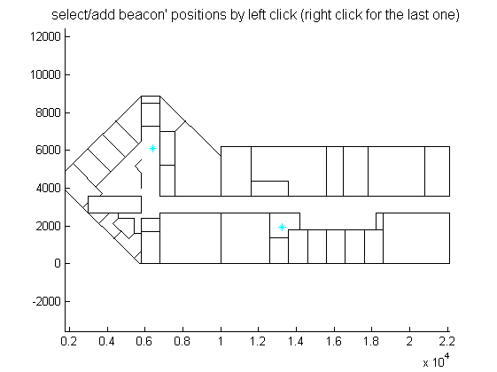
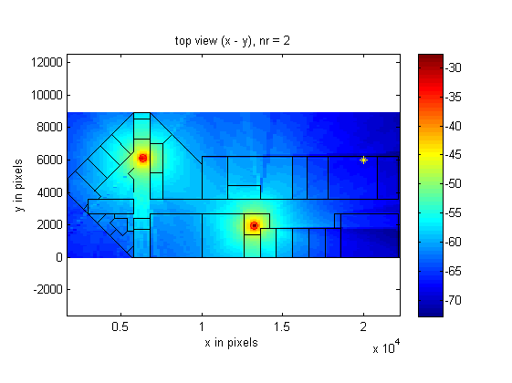

Demo illustring WiFi propagation loss in indoor building
clear,close all
nb_pts = 100;
nr = 2;
option.TX = 0;
option.RX = 0;
option.path = 0;
flp = load_flp('norwich01.flp');
temp = flp.geom.planes([1 , 4 , 7] , :);
xmin = min(temp(:));
xmax = max(temp(:));
temp = flp.geom.planes([2 , 5 , 8] , :);
ymin = min(temp(:));
ymax = max(temp(:));
temp = flp.geom.planes([3 , 6 , 9] , :);
zmin = min(temp(:));
zmax = max(temp(:));
vectx = (xmin:(xmax-xmin)/(nb_pts-1):xmax);
vecty = (ymin:(ymax-ymin)/(nb_pts-1):ymax);
[X , Y] = meshgrid(vectx , vecty);
Z = ((zmax-zmin)/2)*ones(nb_pts , nb_pts);
RX = [X(:) , Y(:) , Z(:)]';
figure(1)
plot_flp(flp , option);
title('select/add beacon'' positions by left click (right click for the last one)', 'fontsize' , 12)
hold on
[x , y] = getpts;
temp = (zmax-zmin)/2;
flp.info.TXpoint = [x' ; y' ; temp(: , ones(1 , length(x)))];
plot(flp.info.TXpoint(1 , :) , flp.info.TXpoint(2 , :) , 'c*');
drawnow
hold off
rs_amp = total_power3(flp.info.TXpoint , RX , flp.geom.planes , flp.geom.material , flp.info.fc , nr);
figure(2)
imagesc(vectx , vecty , 20*log10(reshape(sum(rs_amp , 1) , nb_pts, nb_pts)));
hold on
plot_flp(flp);
title(sprintf('top view (x - y), nr = %d',nr))
xlabel('x in pixels')
ylabel('y in pixels')
zlabel('z in pixles')
axis xy
colorbar
 